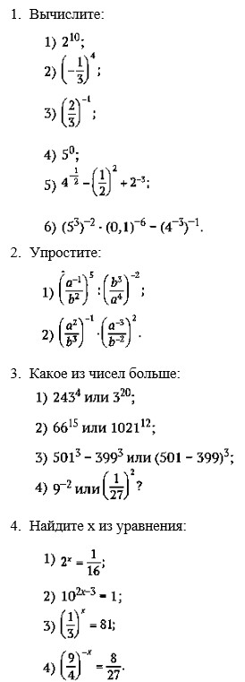

1. Степень числа с натуральным показателем.
Пусть n > 1 — натуральное число; a — произвольное число. Тогда a^n — произведение n множителей, каждый из которых равен a:
a^2 = a · a — квадрат числа a;
a^3 = a · a · a — куб числа a.
Натуральные числа определяются последовательно, начиная с единицы (N = 1, 2, 3…). Если нам известно некоторое число n, то следующим числом будет n + 1. Точно так же последовательно можно определить степени с натуральным показателем: считаем, что a^1 = a;
зная an, полагаем
2. Обобщение понятия степени на произвольные целые показатели.
Для любого числа a ↑ 0 определяем где n — натуральное число. Добавим определение степени с нулевым показателем:
3. Свойства степеней с целыми показателями:
4. Геометрическая прогрессия.
Геометрическая прогрессия — это последовательность, задаваемая первым членом a1 и рекурентным соотношением позволяющим вычислить любой ее член, зная предыдущий. Постоянное число q называется знаменателем прогрессии.
5. Степенные зависимости и функции.
Выбрав любое целое число m, можно построить степенную функцию определенную при всех x, если m — натуральное число, и при всех x, кроме нуля, если m ≤ 0.
Нам известны графики и свойства степенных функций при малых показателях m:

Сумма вклада
Формула для вклада An через n лет называется формулой сложных процентов:
Вопросы и упражнения
